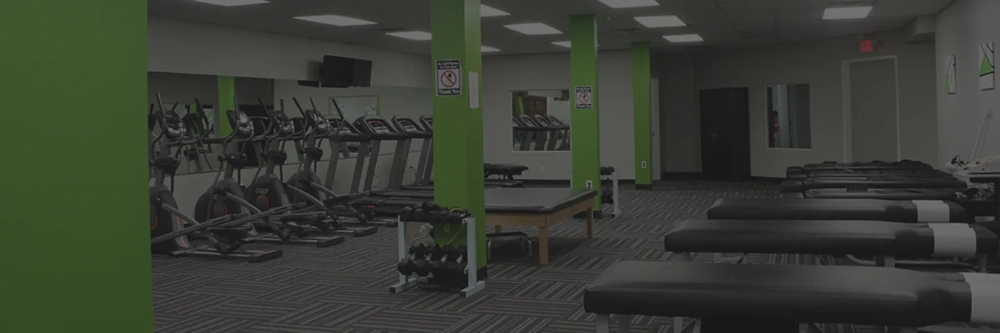
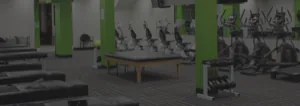
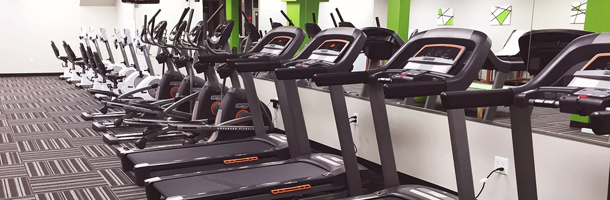
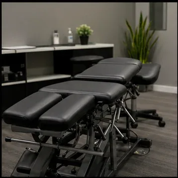

Medical doctor
Our on site medical doctor builds an individualized plan for your injury, working from the same file as everyone else treating you.
Our goal at Metro Physical Medicine Group is to provide the best care, helping those who need us most. Brand new, state of the art facility.

Our on site medical doctor builds an individualized plan for your injury, working from the same file as everyone else treating you.
Adjustment and manual care coordinated with the medical side, rather than two practices sending notes back and forth.
Work injury cases handled with the documentation the claim actually requires, prepared as we go rather than reconstructed later.
Injuries treated with return to activity as the goal, because pain relief alone tends to produce the same injury again.
Rehabilitation in a brand new, state of the art facility, on programming that progresses instead of repeating.
No ride to your appointment? No problem, we can help, and that offer is the reason some patients finish their course of care.

We develop unique treatment plans for each patient. We offer chiropractic care, workers comp and sports injury treatment. Our on site medical doctor helps create an individualized plan to help you recover from an injury. Having the physician and the chiropractor in the same building changes the pace of everything: imaging gets ordered the same day it is indicated, and the plan gets adjusted in a conversation rather than across a two week referral gap.
No problem. We can arrange transportation to your appointment at Metro Physical Medicine, because missing care over a ride is the wrong reason to stay hurt. It is the least glamorous thing this practice offers and it is quietly one of the most useful, particularly for patients recovering from a collision who no longer have a car.



